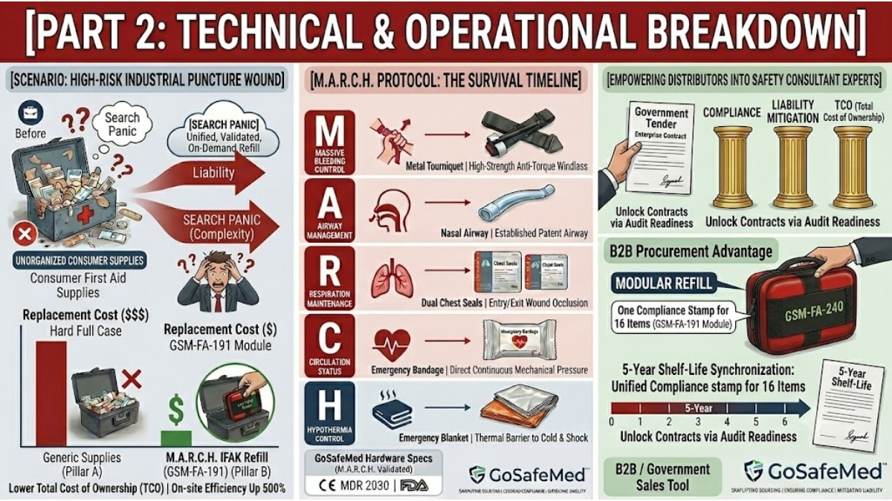

Decoding the M.A.R.C.H. Protocol: Why Hardware Specs Dictate Survival in Severe Workplace Trauma
MAY 26, 2026

In high-risk industrial environments, remote overland expeditions, and tactical operations, severe injuries do not wait for emergency medical services (EMS) to arrive. When an automated machine crushes a limb, or a broken branch causes a deep thoracic puncture wound, the baseline for survival is measured in seconds, not minutes.
Medical professionals and occupational health safety (OHS) directors utilize the M.A.R.C.H. protocol—a military-derived trauma framework prioritizing injuries by their immediate threat to life.
But a protocol is only as reliable as the physical hardware inside your first aid deployment. If a B2B distributor or purchasing manager sources generic, consumer-grade supplies, the system breaks down during real-world execution.
GoSafeMed’s 16-Item IFAK REFILL Module is engineered around this exact clinical timeline. Below is the technical supply-chain audit of how our specific hardware specifications match the golden five minutes of emergency trauma care.
M - Massive Hemorrhage: Stopping Arterial Bleeding Instantly
The “M” in M.A.R.C.H. is the absolute priority. An arterial bleed from a deep laceration can lead to fatal hypovolemic shock in under three minutes.
- The Commodity Flaw: Many standard compliance kits include cheap plastic-buckle tourniquets. Under extreme physical torque or in freezing outdoor environments, plastic buckles are highly prone to snapping, failing to achieve the pressure required to occlude arterial blood flow.
- The GoSafeMed Solution: Our trauma module features a heavy-duty Metal Tourniquet. Built with a rugged aluminum windlass rod, it allows a non-professional bystander to apply maximum structural torque without fear of mechanical snapping.
- The Secondary Line: To secure the wound after tourniquet application, the responder is immediately handed an Emergency Bandage (4") and Compressed Gauze. The integrated pressure bar on the four-inch emergency bandage exerts direct, continuous mechanical force on the wound site, allowing rapid stabilization even during high-stress field transport.
A & R - Airway & Respiration: Managing Thoracic Puncture Crises
Once massive bleeding is controlled, respiratory blockages and open chest wounds represent the next immediate threats to life.
- The Hidden Risk of “Search Panic”: In a typical loose-supply kit, a responder facing an airway blockage has to search through a chaotic pile of dressings to find a clearing tool, leading to critical cognitive delays.
- Securing the Airway: The module provides a pre-lubricated Nasal Airway & Lubricant. This allows a teammate to quickly establish a patent airway passage through the nasal cavity, preventing tongue occlusion even if the casualty is unconscious.
- Anatomy of a Sucking Chest Wound: For deep puncture wounds to the chest cavity (common in heavy machinery or wilderness accidents), standard gauze is useless because atmospheric air leaks into the thoracic cavity, causing a fatal collapsed lung (tension pneumothorax).
- Dual Chest Seals Integration: To prevent this, GoSafeMed packs Dual Chest Seals (2 × Chest Seal) inside the module. Why two? Real-world punctures often create an entry wound and an exit wound. Providing a pair of high-adhesion hydrogel chest seals ensures the responder can completely seal both trauma sites instantly, stabilizing intra-thoracic pressure without complex clinical training.
C & H - Circulation & Hypothermia: Mitigating Shock
After securing breathing, the trauma protocol shifts to managing systemic circulation and preventing the lethal triad of trauma (hypothermia, acidosis, and coagulopathy).
- Fracture Stabilization: Bone fractures from falls or crush impacts can rupture internal blood vessels if left loose. The inclusion of an Aluminum Splint (18") and a Combat Cravat allows rapid, rigid structural immobilization of limbs right on the spot.
- Fighting Thermal Failure: Even in hot weather or desert environments, massive blood loss impairs the body's ability to regulate temperature, triggering hypothermic shock that stops blood clotting. The Emergency Blanket inside our module acts as an essential thermal shield, reflecting body heat back to the casualty to protect vital organs while awaiting EMS arrival.
Technical Auditing for B2B Procurement Boards
For enterprise buyers and premium outdoor distributors executing due diligence, GoSafeMed’s component selections are fully backed by rigorous international manufacturing frameworks:
| M.A.R.C.H. Phase | Embedded Hardware Specifications | Sourcing Verification Value |
|---|---|---|
| M (Massive Bleeding) |
1 × Metal Tourniquet 1 × Emergency Bandage 4" 1 × Compressed Gauze |
Premium aluminum windlass hardware built to withstand maximum torque without structural fatigue. |
| A & R (Airway / Respiration) |
2 × Chest Seal 1 × Nasal Airway & Lubricant |
Medical-grade hydrogel adhesion for immediate entry/exit wound sealing and structural airway security. |
| C & H (Circulation / Trauma Shock) |
1 × Aluminum Splint 18" 1 × Combat Cravat 1 × Combat Tape 1 × Emergency Blanket 1 × Medical Shears 19cm |
High-performance tools for heavy clothing removal, rigid limb immobilization, and hypothermia tracking. |
By upgrading your catalog from generic medical supplies to GoSafeMed’s M.A.R.C.H.-aligned Trauma Refill Modules, you provide your clients with a fully audited, contract-ready risk mitigation system backed by CE MDR (valid through 2030) and FDA Registration.
Technical Sourcing Review: Ready to implement verified trauma hardware into your corporate tenders or retail networks? Reply with CATALOG to access the complete 2026 Technical Specification Matrix and B2B wholesale contract structures.